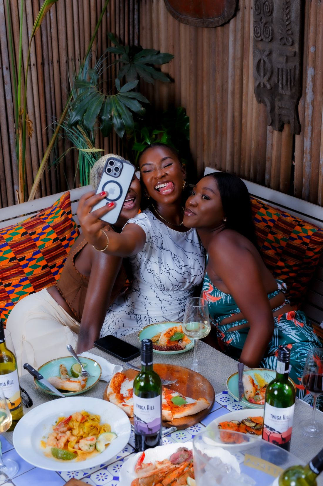
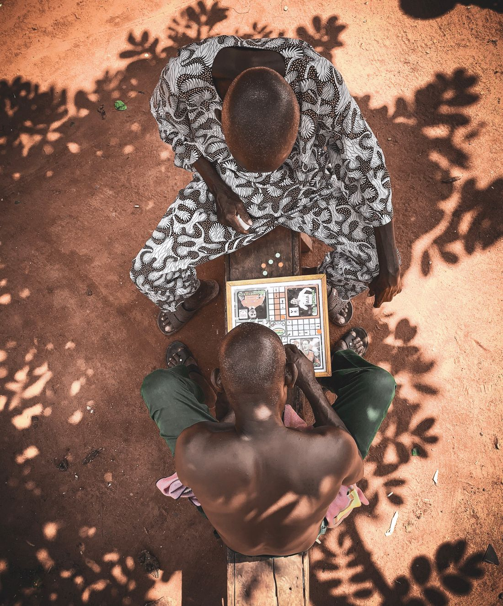
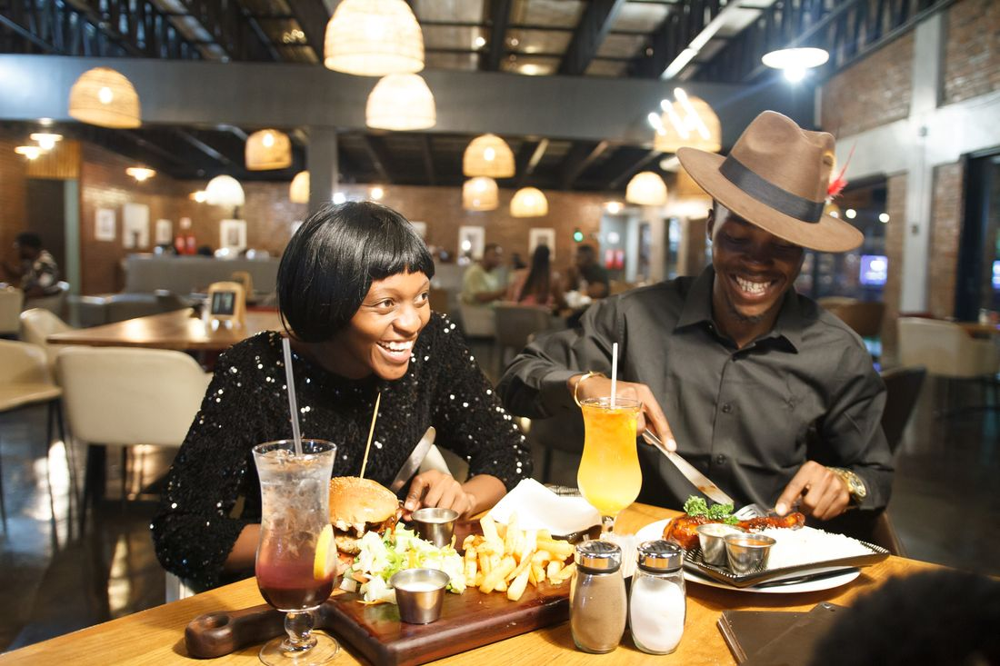

?
Petite
question
Ton dimanche
entre amis
DIMANCHE
7
?
?
?
il ressemble à quoi ?
OPTION 01
Un bon repas

autour d'une belle table
OPTION 02
L'ambiance
MUSIQUE

JEUX

FOUS RIRES


OPTION 03
Un coin agréable
On se pose ici ?
pour discuter,
rencontrer du monde
et juste profiter
du moment
Et si tu pouvais
tout réunir
 01
0102
03dans une seule
expérience
Dimanche entre amis
À quoi ressemble ton dimanche idéal ?
J'aimeCommenter
A
Un bon repas, direct !
K
Musique et jeux, obligé
S
Moi je veux tout !
C'est quoi, ton
dimanche
idéal ?
Réponds en commentaire
01
0203